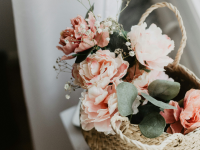
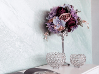
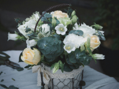

25-60-60")
Цветочные композиции для интерьера
Цветочные композиции для интерьера способны преобразить любое пространство, добавив ему уюта, элегантности и индивидуальности. В Julia's Flowers мы предлагаем широкий выбор флористических решений, которые подчеркнут атмосферу вашего дома или офиса, создавая гармонию и комфорт в каждой комнате. Наши букеты и композиции способны не только украсить пространство, но и вдохновить на новые идеи и творческие поиски.
  Мы работаем с учётом ваших предпочтений и особенностей интерьера: цветовая гамма, стиль помещения и размер пространства. Каждая композиция создаётся так, чтобы идеально вписаться в ваш интерьер, будь то минималистичная современная квартира, роскошная гостиная в классическом стиле или уютный офис. Мы подбираем цветы, которые не только красиво смотрятся, но и гармонируют с вашим пространством, добавляя ему жизни и тепла.
В нашем ассортименте — как классические композиции в вазах, так и современные флористические решения, такие как настенные инсталляции и цветочные панно. Если вы хотите привнести стильный акцент в интерьер, мы можем предложить вам оригинальные цветочные инсталляции, которые будут радовать вас каждый день. В комбинации с нестандартными вазами, корзинами или металлическими конструкциями, такие композиции выглядят не только элегантно, но и очень современно.
Для тех, кто предпочитает практичные решения, мы также предлагаем композиции из стабилизированных цветов, которые не требуют особого ухода и сохраняют свою красоту в течение долгих лет. Стабилизированные цветы идеально подойдут для тех, кто ценит долговечность и не хочет тратить время на ежедневный уход, но при этом хочет наслаждаться красотой природы в своём доме или офисе.
Композиции из живых цветов придадут свежесть и аромат любому помещению, а их эффект будет особенно заметен в сочетании с красивыми ваза-аксессуарами, отражающими ваш стиль. Каждая деталь, каждая лепестковая линия создаёт неповторимую атмосферу, которая делает пространство особенным.
Мы готовы помочь вам выбрать идеальную цветочную композицию для любого интерьера: от уютной спальни до стильного кабинета. Мы уверены, что с помощью наших букетов и композиции каждый уголок вашего дома будет наполнен уютом и свежестью.
Перейти на главную страницу